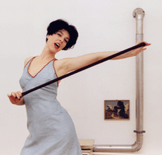

|
JUTTA BURKHARDT
FLEXIBELLE | 2003 | 1’49
Format: DVD
Inspiriert von den Anfängen der Damenstrumpfwerbung und dem damit verbundenem Frauenbild, zeigt „flexibelle“ eine aus Nylonsöckchen und Strumpfhaltern gefertigten Damenhandtasche. In Posen aus der Werbeindustrie wird die Möglichkeiten der Handtaschennutzung dargestellt. Dann verselbstständigt sich die Tasche und verwandelt sich in einen Ballon. Prompt wird die Chance ergriffen, mit ihr davonzufliegen. „Flexibelle“ versteht sich als ironisches Statement zu den in Mode gekommenen „intelligenten“ Textilien oder Alltagsobjekten, die sich flexibel verschiedenen Gegebenheiten anpassen. In diesem Fall heißt das: Spontanen Wünschen werden keine Grenzen entgegen gesetzt, alles ist möglich.
Jutta Burkhardt, geb. 1969 in Zürich. Studium Bühnen- und Kostümbild am Mozarteum, Salzburg. Danach Bühnenbildassistenzen, u. a. am Bayerischen Staatsschauspiel München, am Baden-Württembergischen Staatstheater und Burgtheater, Wien. Seit 1996 Raum- und Videokonzeptionen, u. a. für das Bayerische Staatsschauspiel, Marstall, München. Sie lebt und arbeitet in München.
Ausstellungen (Auswahl): „3_D“ im Newzone Laboratorio per l´arte contemporanea, Ortona, Italien und im Laboratorium e. V., Praterinsel, München 2001 | „Sotto lo stesso cielo“, Galerie der Künstler, München 2001 | „ZEUGHAUS – arsenal des alltäglichen“, Toskanische Säulenhalle, Augsburg 2001 | „Lange Nacht der Galerien“, Weiden 2001 | „gewand“, Galerie der Künstler, München 2003 | „Synapsen – 8. Station, Aktionspotential“, Aktionsforum, Luitpold Lounge, München 2004
zurück
|